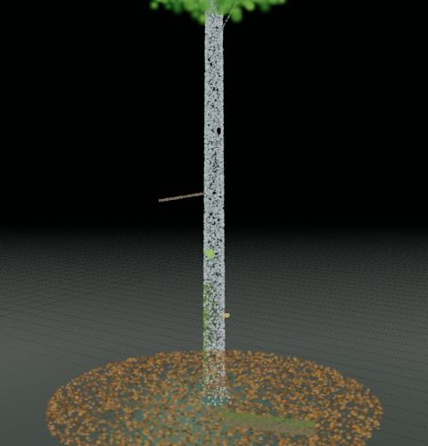
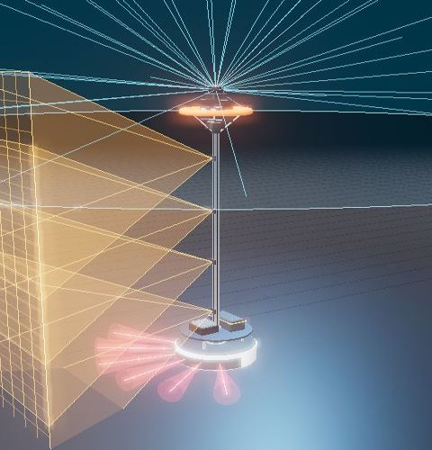

Konzepte: Aufnahmesysteme
Skizzen für Aufnahmesysteme, mit denen Szenen für die For3Dsuite entstehen sollen. Beide Seiten sind interaktive 3D-Rundgänge (Deutsch): Bauteil für Bauteil, mit Sichtfeldern und Einsatz.

Projektskizze · Wald · Nationalpark Hainich
Scan-Rucksack für den Wald →
Zwei Laserscanner und fünf Kameras an einem Mast, getragen von einer Person. Aus einer Aufnahme entstehen Holzwert und Habitatwert je Baum.
- Was 3D Gaussian Splatting im Wald leistet
- Sensoren, Sichtwinkel, Auflösung in mm pro Pixel
- Aufnahme im Bestand, Aufwand und Kosten

Projektskizze · Kulturerbe · Innenräume
Scanroboter für Museumswohnungen →
Ein fahrender Aufnahmeroboter für enge Innenräume. Er hält an, dreht sich, schwenkt die Kameras und erkennt Hindernisse vom Boden bis über den Kopf.
- Basis, Mast, Lichtvorhang, Schwenkkopf, Laserscanner
- Sicherheit: Absturzsensoren, Schaltleiste, Navigation als Säule